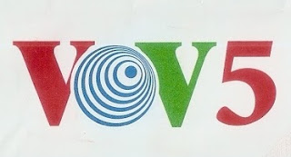

SINTONIZANDO
A Rádio Cultura do Nordeste, foi idealizada pelo rádio-técnico Jaime Mendonça (já falecido), que montou um pequeno transmissor de 25 watts e colocou a emissora no ar ainda de forma irregular.
DESTAQUE
Resultado da Pesquisa DX Clube Sem Fronteiras - Melhores Emissoras e Programas/ Resultado de la Encuesta DX Clube Sem Fronteiras - Mejores Emisoras y Programas/ Result Search DX Clube Sem Fronteiras - Top Broadcasters and Programs
EMISSORAS INTERNACIONAIS
A Rádio Voz do Vietnã, como Rádio Nacional, difunde as informações, políticas e lineamentos do Partido Comunista e o Estado, como sua contribuição a elevar o nível cultural e espiritual do povo, e para atualizar sobre a realidade do país aos amigos do mundo.